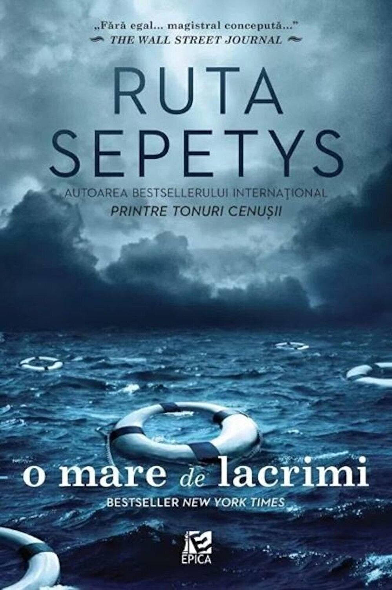

,,O mare de lacrimi" de Ruta Sepetys
O mare de lacrimi de Ruta Sepetys aduce în atenția publicului unul dintre cele mai tragice evenimente ale lumii, eveniment întâmplat într-una dintre cele mai triste perioade. Vorbim de perioada celui de-al Doilea Război Mondial, perioadă în care sute de mii de suflete au plecat din lumea celor vii. Perioadă în care moartea umbla nestingherită și răpea zilnic suflul a zeci de oameni. Fie că vorbim de sufletele celor care se ascundeau, a celor care luptau sau a celor care îndurau lagărele.
Unul dintre evenimentele care au marcat această perioadă, un eveniment care ilustrează cât de crud poate fii războiul este scufundarea vasului german Wilhem Gustloff. Vasul transporta peste zece mii de oameni printre care civili, răniți, oficiali naziști și personal militar. Toți cei îmbarcați încercau cu disperare să scape din mâinile Armatei Roșii. Din nefericire, nava a fost torpilată de un submarin sovietic. Au pierit nouă mii de oameni doar într-un loc, în aceeași zi. Dintre acești oameni aproape cinci mii erau copii.
În romanul O mare de lacrimi, autoarea Ruta Sepetys invită cititorul să parcurgă drumul spre libertate alături de Joana, Emilia și Florian. Invită cititorul să își amintească. Să nu lase să cadă în uitare toate aceste suflete care nu au mai apucat să își trăiască toate răsăriturile. Ruta Sepetys vorbește despre o călătorie anevoioasă, o călătorie marcată de moarte și foamete. O mare de lacrimi este povestea oamenilor care au reușit să rămână oameni când cei mai mulți dintre semenii lor se transformaseră în bestii.
